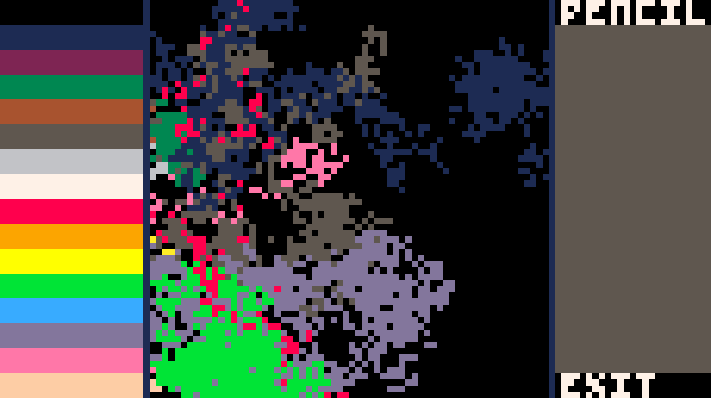
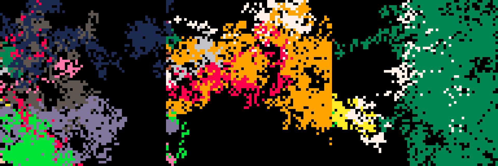
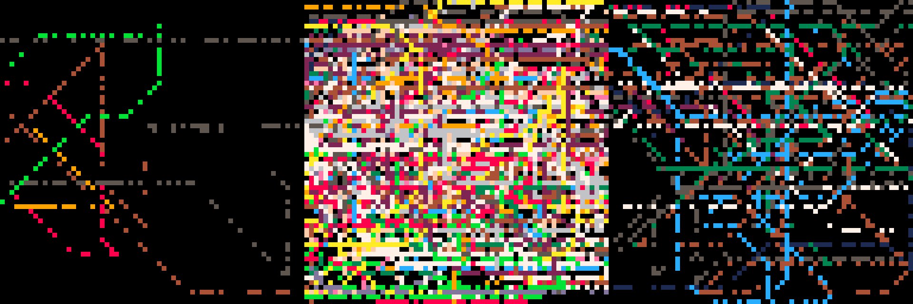

I’ve had a goal since at least January 2015 to create
more artwork with computers. I want artistic software not as a tool, but as a
partner. I finally decided to act on this goal by creating a pixel art
bot.

The interface used by the pixel art bot I built, along with its
first artwork.
I want a bot who helps me make the things I want to make but also has independent interests.
It should learn over time, adapting to its experiences and interests.
By building an interface that I and bots can use, I can teach new techniques to a pixel art
bot and vice versa. The bot’s aesthetic taste needn’t be the same as mine, but we should share a
common vocabulary.
Using the interface
A pixel art bot has a digital body. It lives at a cursor position, and can move up, down,
left, and right. It can also press and release a button to interact with the interface and draw.

The first three images drawn by the bot.
These images were generated by randomly picking 3 values:
- up/down (-1 for down, 0 for stay, 1 for up),
- left/right (-1 for left, 0 for stay, 1 for right),
- and press/release.
Pressing and releasing along the left side of the interface selects a color from the palette.
Pressing on the canvas draws the selected color. Pressing and releasing in the lower-right corner
(the exit button) stops the program: the bot’s way of saying that it’s done drawing.
We need to go deeper
Randomly moving across the screen makes interesting art, but the bot can’t express intention
with completely random movement. What if the bot could choose where it wanted to go and then
direct its movements according to that?

The first three images the bot drew using the go-to-target strategy.
To draw these images, the bot selects a target point and then travels in 45-degree lines to
get there. The button presses are still completely random. This is one level of thinking deeper
than completely random movement. The bot picks a strategy and executes the movements needed to
fulfill it.
What’s next?
Perception
The bot does not perceive the interface at all. It needs a way to look at the image it has
drawn. Some simple perceptions are the proportions of the colors in the image. For example, an
image could be 86% black, 4% light blue, and 10% dark gray. The bot should be able to perceive
this and adjust its behavior in response.
Interests
Once a pixel art bot can see an image, it can have an opinion about it. It could desire a
specific color proportion. A bot may really like images with exactly 73% pink.
The bot’s interests should influence its behavior. Each type of interest, for example: 23%
blue or 89% white, votes for the next action that maximizes its preferences.
Long term goals
This project is inspired by the
art bot commune by Kate Compton and Johnathan Pagnutti. (Check out the
video of Johnathan talking about the project.) Once the pixel art bots have interests, they
can critique artwork based on those interests. Critiques are constructive, for example, “this
could really use more dark blue.” The critic shares what should be increased or decreased to most
improve the artwork. I want to be an active participant in this bot commune, both as an artist
and a critic.
Constructive critiques have a vocabulary based on how the bots perceive the art. The bots
start with built-in perceptions of color ratios, but perception should be learned, too. Having a
shared vocabulary will require communication of new perceptual concepts (cat-like, face-like,
contrast). To communicate a concept like this will require labeled images with the name of the
concept and a value indicating how well the image matches the concept.
If the critic really likes something, they can ask “how did you do that?” This will prompt the
artist to share a timelapse. This is a way of sharing art techniques, but it will only make sense
to use once there is some ability to learn strategies for moving the cursor around.
Interest needs to be learned / adapted, as well. Maybe some pop art bots will try to match
their interests with those critiquing their work so as to maximize the reach and rating. Maybe
other bots will try to impress specific critics. Maybe some hermit-like bots will ignore others
completely and adapt their interests only according to their own work.
Contributing to the project
If you want to try it out, I’ve put the
code for the pixel art bot on GitHub. If you
make any art bots using this code, I’d love to see the results.
If you want to contribute directly, I’d love some help in creating a mobile application for
human generated art, using the same interface. Likewise, some sort of web app & API will be
needed for the bots to share their artwork and critiques.
Do you have ideas or lessons about building art generation bots that also learn from
experience? Please share them.
Frequently Asked Questions
Well, not actually frequently: more like anticipated questions.
Why build a drawing app with buttons and a cursor just for a bot to
use?
I want the bot to interact with the canvas in much the way that a human would. In fact, I wish
to create artwork myself in the same manner as the bot, by moving a cursor around the same screen
and clicking the interface elements. In this way, we can learn directly from each other’s
movements.
Why use a cursor for an art app when touch screens are everywhere
now?
It seemed a much more tractable problem to build a bot that only has to choose between
up/down, left/right, and clicking. There are 3x3x2 = 18 choices of next action with a cursor and
selected color, versus 64x64 = 4,096 choices of where to place the next color if the bot can
click anywhere.
Also, the interface for humans should be a mobile app that can run on a phone. I’ve found that
at small screen sizes having a cursor really helps. The
Android and
iOS app
dotpict uses a cursor for it’s
interface and it works really well on a phone.
Why don't you just place colors directly onto a canvas?
Certainly an computer-driven art program could generate a whole image without the use of a
cursor, but compare the art this bot generates to
a typical image that is generated by picking RGB values at random. Even though the images the
bot draws are also random, they are drawn using a process that feels more physical. The images
are more like what a human would generate by a similar process of random hand movement.
Why didn’t you use
Tracery to generate art?
The
art bot commune represented artists as Tracery programs that generate other Tracery
programs that generate SVG images. It is conceivable that I could do a similar flow to generate
pixel art and reused code from that. Pixel art doesn’t really lend itself to that kind of
generation, though. A raster image doesn’t easily map to the same generative techniques as a
vector format. Also, I desire to be part of this bot commune. Since I’m not a Tracery program (as
far as I know) it would be very difficult for me to communicate in the same ways that the bots
do.
Why pixel art?
Because I like pixel art and know a little about how to make it, and I want to be a part of
this bot commune.